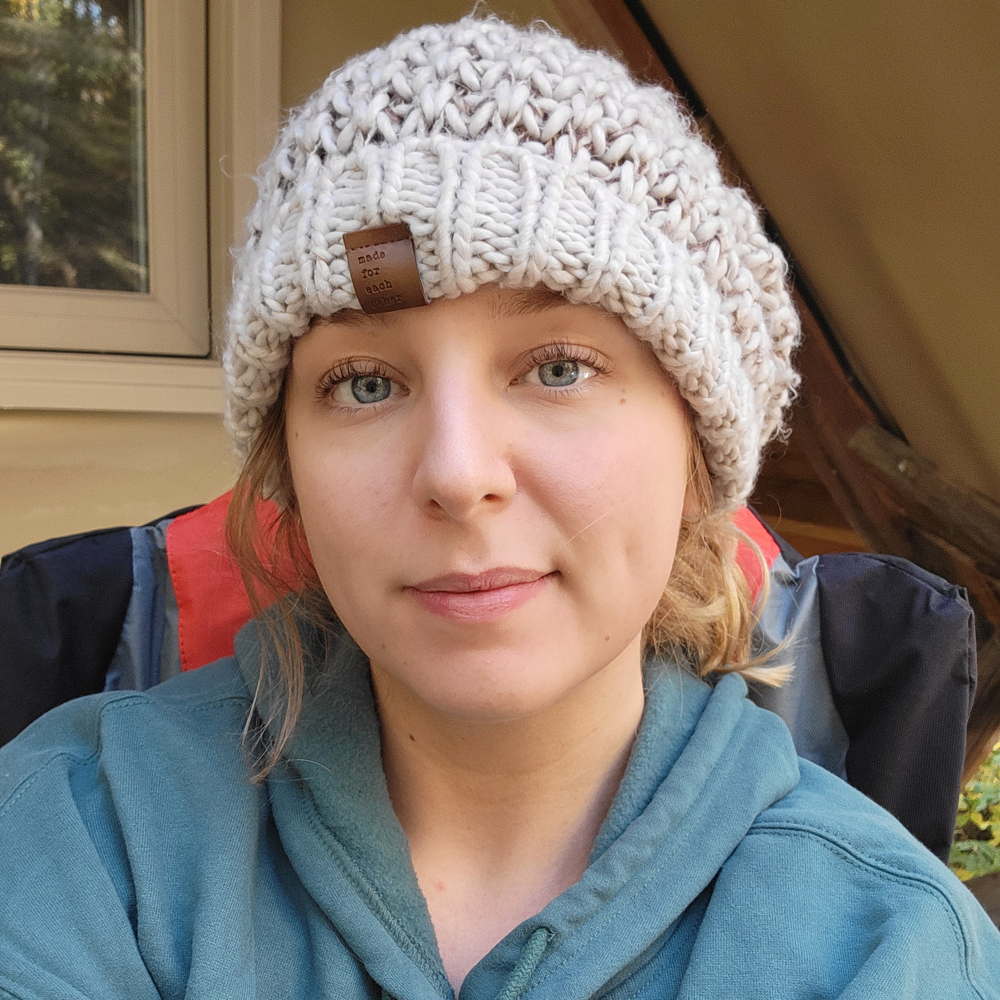
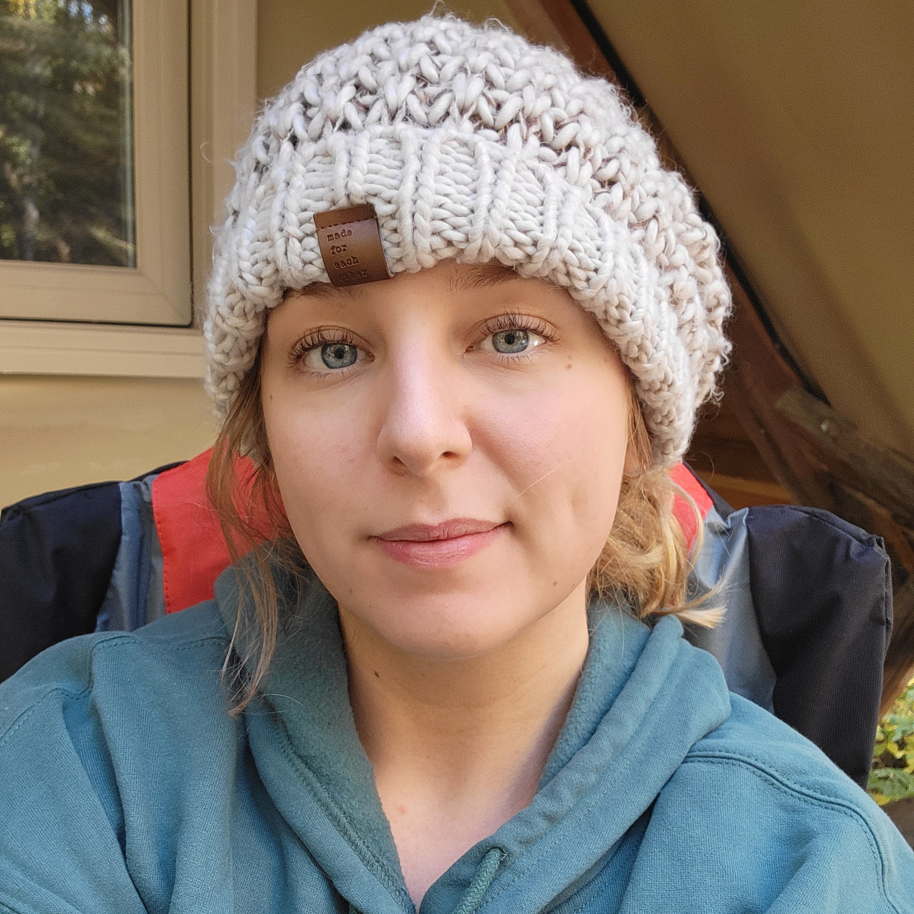

About Me
I’ve always believed that being an artist is about more than just what you create—it’s about how you create, why you create, and the experience you give to the people who trust you with their vision.
My journey as an artist didn’t happen overnight. It’s been shaped by years of learning, experimenting, refining my skills, and showing up consistently—even when growth felt slow. Over time, what started as passion evolved into a craft, and that craft grew into a career. Each project, each client, and each challenge pushed me to level up not just technically, but creatively and professionally.
As an artist, I’m constantly evolving. I don’t believe in staying comfortable or repeating myself just because something “works.” I’m always learning—new techniques, new perspectives, new ways to communicate emotion and story through my work. My style has matured alongside my confidence, and today I create with intention, clarity, and a strong sense of identity while still staying open to collaboration and new ideas.
Working with clients is one of my favorite parts of what I do. I take pride in being someone people can trust—not just to deliver quality work, but to listen, communicate clearly, and care about the outcome as much as they do. Whether someone comes to me with a fully formed vision or just a rough idea, I make it a priority to meet them where they are and guide the process in a way that feels smooth, respectful, and enjoyable.
I treat every project like it matters—because it does. Deadlines aren’t suggestions, details aren’t optional, and professionalism isn’t something I switch on and off. I believe great art and great service should go hand in hand. My goal is always for clients to walk away not only happy with the final result, but excited they chose to work with me.
At the end of the day, I’m someone who genuinely loves what I do. I care deeply about growth, creativity, and building lasting relationships with the people I work with. If you’re looking for an artist who brings skill, heart, reliability, and a collaborative spirit to the table—you’re in the right place.
Let’s make something you’re proud of.